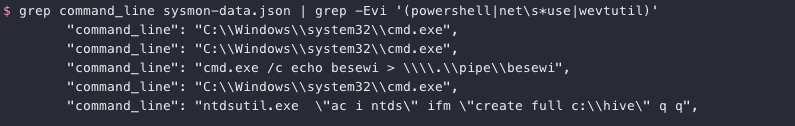

Determine Attacker Technique#
Hint: SugarPlum Mary - Linux Path
Request#
Using these normalized Sysmon logs, identify the tool the attacker used to retrieve domain password hashes from the lsass.exe process. For hints on achieving this objective, please visit Hermey Hall and talk with SugarPlum Mary.
Resources#
- Normalized Sysmon logs
- EQL Threat Hunting
- Sysinternals New Tool Sysmon
- How to find the adversary with EQL
Solution#
We could install EQL to query the normalized Sysmon logs and find the tool that was used to retrieve the domain password hashes from lsass.exe. Fortunately for us though the log only contains a handful of different types of commands. If we grep for lines containing command_line but exclude the ones containing wevtutil, net use, and powershell only five remain.
grep command_line sysmon-data.json | grep -Evi '(powershell|net\s*use|wevtutil)'

MITRE ATT&CK technique T1003 covers credential dumping and provides an overview of some of the commonly used tools. One of the ways to retrieve password hashes in a Windows domain setup is to use the Windows builtin ntdsutil.exe command line tool to grab a copy of the main Active Directory database file (i.e. NTDS.dit), which is exactly what our attacker did.
Answer#
Tool: ntdsutil
Hint#
None